As companies look inward to discover where they can shore up cloud security shortcomings, the options can seem overwhelming. With so many unique ways to approach cloud security, it’s important to find the most efficient tool to implement into your cloud ecosystem. Before deploying a new security framework, it’s best to understand why cloud security needs additional layers of protection.
In short, the way we as developers and DevOps often approach cloud development is usually rooted in accessibility, performance, and utility. That mindset doesn’t always put security at the forefront, making it tricky to adapt cloud infrastructure when issues occur.
That’s where infrastructure as code comes in.
Deploying immutable infrastructure using infrastructure as code (IaC) frameworks like Terraform and CloudFormation is increasingly becoming the norm. There are many advantages to configuring resources with IaC, including the ability to use scanning to identify and validate security and compliance before deployment.
For AWS users, one IaC approach that is becoming more popular is the use of AWS Cloud Development Kit (CDK) to generate CloudFormation templates using imperative languages like Python or JavaScript. This approach allows you to develop sophisticated deployment logic using a language you already know.
However, because of the nature of imperative code, it is much more difficult to catch all possible misconfigurations in the source code. CloudFormation templates configured with CDK are not available to scan for issues until build-time, so your pipeline needs to have a solution to block any insecure, dynamically generated resources before deployment.
To help teams do that, Bridgecrew now supports scanning of CloudFormation templates generated by AWS CDK at build-time.
Bridgecrew scans CloudFormation templates (as well as many other IaC frameworks) against hundreds of possible security and compliance misconfigurations like public S3 buckets and overly permissive firewall rules before resources get deployed to the cloud.
To help teams do that, Bridgecrew supports scanning of CloudFormation templates generated by AWS CDK at build-time.
Bridgecrew scans CloudFormation templates (as well as many other IaC frameworks) against hundreds of possible security and compliance misconfigurations like public S3 buckets and overly permissive firewall rules before resources get deployed to the cloud.
Tutorial overview
In this post, we’ll walk you through setting up AWS CDK to generate CloudFormation templates that we will scan with Bridgecrew in the build pipeline. We’ll then review issues in the Bridgecrew platform and deploy resources once there are no violations.
Prerequisites:
- An AWS account and a configured AWS CLI
- An IAM user with administrator privileges
- A recent version of Node.js (I’ll use 14.5.0)
- A recent version of Python (I’ll use 3.8.4) – The AWS CDK supports several languages. In this tutorial, we’ll use Python, but the examples are easily transferable to other languages—that is, after all, the whole point of CDK.
- Python virtualenv or another python environment manager, like pipenv
We’ll use the AWS dev tools suite—CodeCommit, CodePipeline, and CodeBuild—to keep the solution simple from a tooling standpoint. You can also easily apply these concepts to other source code repositories and CI/CD pipelines.
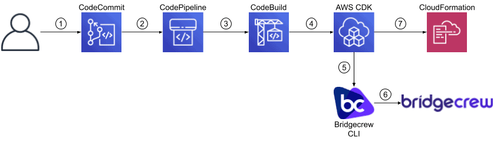
The workflow will be:
- Commit a change to the CodeCommit repository.
- The commit triggers a new pipeline.
- CodePipeline triggers CodeBuild.
- CodeBuild invokes the AWS CDK to generate a CloudFormation template.
- The Bridgecrew CLI scans the template.
- The Bridgecrew CLI reports any resource errors to the Bridgecrew platform.
- If the CLI scan is successful, CodeBuild invokes CloudFormation to deploy the resources.
To simplify pipeline setup, we’ll be using the master branch. Of course, in reality, you would be pushing your changes to other branches, from which you could use any number of workflows. For example, you could scan resources at the branch level and block merging to master until there are no violations.
Retrieve Bridgecrew API Token
Start by signing up for a Bridgecrew account—it’s completely free to use for scanning up to 50 resources.
Once you’ve signed in using GitHub, Google, or an email and password, navigate to the Integrations tab on the left and select API Token under the Continuous Integration category. We’ll use this to set up the CodeBuild integration later.
AWS CDK and CodeCommit
Next, we’ll set up the AWS CDK locally and create a source code repository on CodeCommit.
On your machine, create and change to a directory named bridgecrew-cdk to it. (You can call it something else, but you’ll need to modify values later on.) Run the following commands to install the AWS CDK and create a starter project:
npm install -g aws-cdk cdk init app --language python source .env/bin/activate # the last command created this
Open setup.py in an editor and replace the install_requires block with:
install_requires=[ "aws-cdk.core", "bridgecrew", "aws-cdk.aws-s3" ]
Next, run:
pip install .
Navigate to AWS CodeCommit, select Create repository, and enter the repository information:
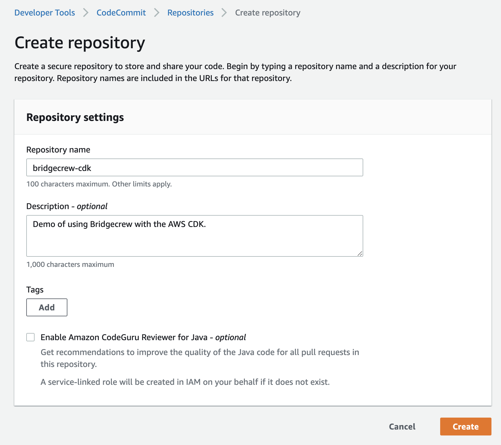
Follow the steps here to create an SSH key and set up IAM authentication from git.
Back in your local repository, run the following commands to add the remote repository and push the empty project, replacing the highlighted portions as appropriate:
git remote add origin ssh://git-codecommit.us-west-2.amazonaws.com/v1/repos/bridgecrew-cdk git add . && git commit -m "initial commit" git push origin master
Validate the push on AWS CodeCommit:
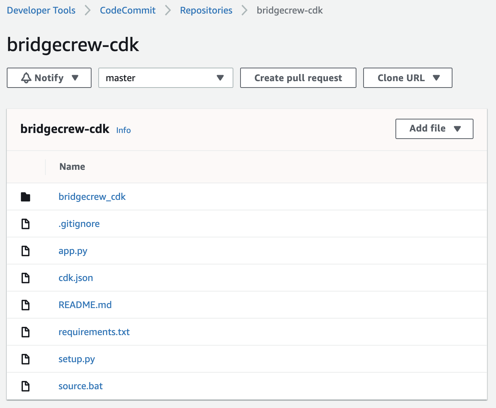
Setting up CodeBuild
AWS CodeBuild is the service that runs build jobs consisting of commands we can specify. Now that our repo is ready to go, we’ll set up CodeBuild to run our build flow, which will eventually generate a CloudFormation template, scan it with Bridgecrew, and deploy the stack.
Create an AWS SSM parameter to hold the Bridgecrew API Token we retrieved from the platform before.
aws ssm put-parameter --name bridgecrew_api_key --value <api_token> --type SecureString
Navigate back to AWS CodeBuild and click Create build project, specifying a name and description in the Project Configuration section.
In the Source section, select and fill the following fields:
- Source provider: AWS CodeCommit
- Repository: bridgecrew-cdk
- Branch: master
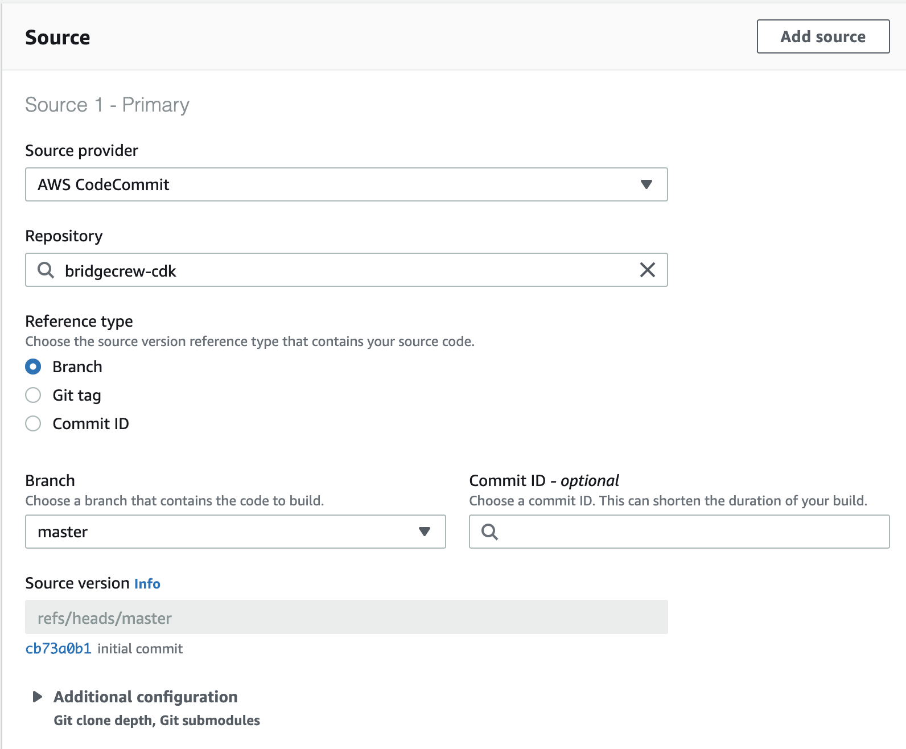
In the Environment section, select and fill the following:
- Operating system: Ubuntu
- Runtime(s): Standard
- Image version: standard:4.0
- We’ll modify the role name in the next step.
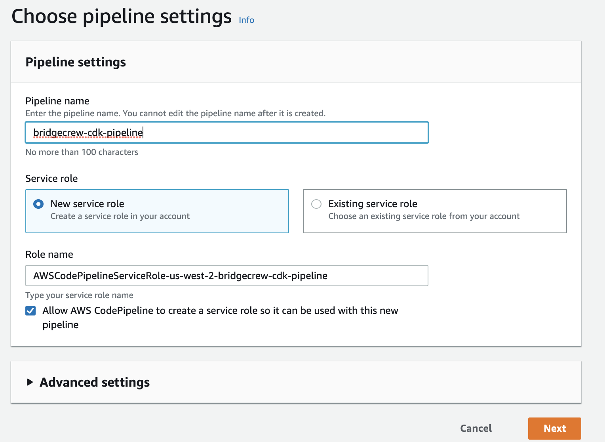
In the Buildspec section, select Insert build commands. Select the Switch to editor button and enter the following block:
version: 0.2
version: 0.2
env:
variables:
BC_SOURCE: "codebuild"
parameter-store:
BC_API_KEY: "bridgecrew_api_key"
phases:
install:
runtime-versions:
python: 3.8
nodejs: 12
commands:
- npm install -g aws-cdk
- pip3 install .
build:
commands:
- cdk synth
# We’ll just use one check (S3 versioning) to make it simple
- bridgecrew -f cdk.out/bridgecrew-cdk.template.json -c CKV_AWS_21
- cdk deploy
Looking at that block, the most notable lines are:
BC_SOURCE:this tells the CLI what type of repo is being scanned so the platform can handle it later.BC_API_KEY:the API key for sending results to the platform (we’ll use this later).cdk synth:this generates a CloudFormation template to scan.bridgecrew:this scans the template for one specific check (the S3 versioning check). Typically, we would not specify just one check, but this keeps the example simple.cdk deploy:this deploys the CloudFormation stack, but only if thebridgecrewcommand does not report violations.
Once you’ve added that block, select Create build project.
We’re almost ready to scan our code and find violations. (If you remove the BC_API_KEY line, you could run as is, but CodeBuild wouldn’t be able to access the SSM parameter or deploy resources. We’ll fix that in the next step.)
Update IAM permissions
The service role that we created along with our build pipeline needs extra permissions to fetch the API key secret and deploy the resources in CloudFormation.
Find the IAM role created from CodeBuild – in this case, codebuild-bridgecrew-cdk-service-role.
Edit the policy and add the following statements (change the bucket name to something unique, change the stack name to match your project folder, and change your AWS account ID and region):
{
"Sid": "AllowCreateBucket",
"Effect": "Allow",
"Action": [
"s3:CreateBucket",
"s3:PutBucketVersioning"
],
"Resource": [
"arn:aws:s3:::bridgecrew-cdk-bucket"
]
},
{
"Sid": "AllowGetSSMParam",
"Effect": "Allow",
"Action": [
"ssm:GetParameters"
],
"Resource": [
"arn:aws:ssm:us-west-2:012345678910:parameter/bridgecrew_api_key"
]
},
{
"Sid": "CloudFormation",
"Effect": "Allow",
"Action": [
"cloudformation:DescribeStacks",
"cloudformation:DescribeChangeSet",
"cloudformation:ExecuteChangeSet",
"cloudformation:CreateChangeSet",
"cloudformation:CreateStack",
"cloudformation:DeleteStack",
"cloudformation:GetTemplate",
"cloudformation:DescribeStackEvents"
],
"Resource": [
"arn:aws:cloudformation:us-west-2:012345678910:stack/bridgecrew-cdk/*",
"arn:aws:cloudformation:us-west-2:012345678910:stack/CDKToolkit/*"
]
}
Setting up CodePipeline
AWS CodePipeline allows us to trigger builds automatically on a push to the source repo—you can skip this step if you just want to trigger builds manually.
Navigate to AWS CodePipeline, then create and name a new pipeline to start triggering builds automatically.
For the Source stage, select the CodeCommit repository:
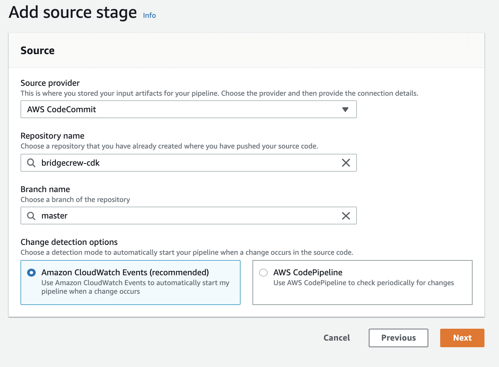
For the Build stage, select the CodeBuild project:
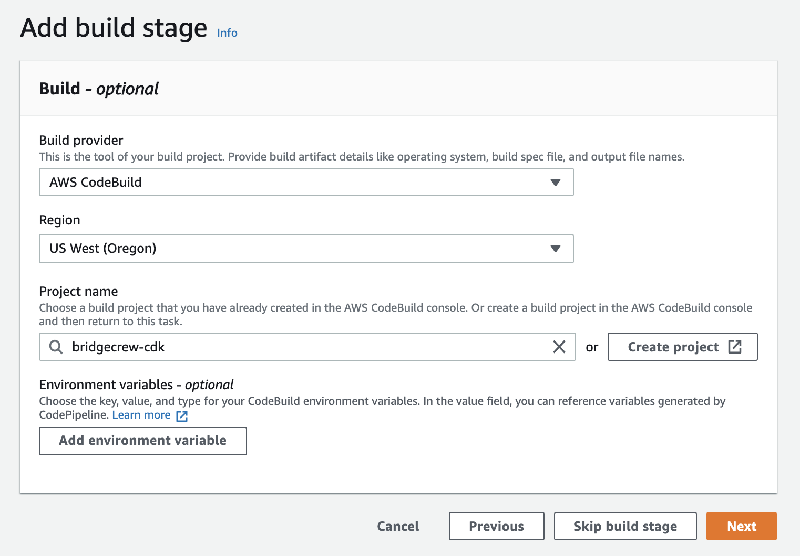
On the Add deploy stage screen, select Skip deploy stage, then on the summary screen, select Create Pipeline.
Create a Resource
Now that we have our pipeline set up, we can start using AWS CDK to create templates and Bridgecrew CLI to scan them, and then deploy the stack once the scan passes.
Let’s create an S3 bucket.
In an editor, open the file bridgecrew_cdk/bridgecrew_cdk_stack.py and add the following import statements:
from aws_cdk import core, aws_s3 as s3 from aws_cdk.core import RemovalPolicy
Add the following statement in the __init__ method to create an S3 bucket, changing the bucket name to be unique for you. To demonstrate how Bridgecrew identifies misconfigured resources, we’ll set this bucket up to violate CKV_AWS_21 (the check we specified in the buildspec command), which validates that versioning is enabled.
bucket = s3.Bucket(self,
'bridgecrew-cdk-bucket',
bucket_name='bridgecrew-cdk-bucket',
removal_policy=RemovalPolicy.DESTROY)
Scan using Bridgecrew locally
Run the following commands locally to generate a CloudFormation template and scan it with Bridgecrew using the same commands from the buildspec:
cdk synth bridgecrew -f cdk.out/bridgecrew-cdk.template.json -c CKV_AWS_21
We see that the specified check fails, which in real life we would want to fix.
Normally we would want to fix this, but we’ll push this to the repo and watch the build. Add, commit, and push the files using git:
git add . git commit -m "add bad bucket" git push origin master
View the CodeBuild project. In the logs for the latest build, we see the build fail because of the failed check:
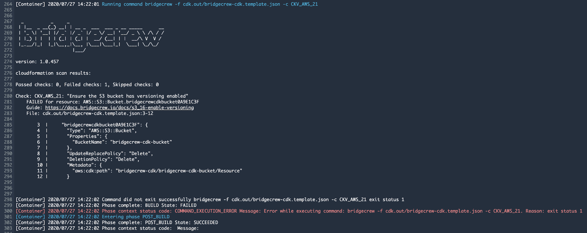
Review scan results in Bridgecrew
Now we’ll integrate the scanner with the Bridgecrew API to report failed checks to the platform.
Edit the buildspec to integrate with the API by adding the following lines under env.variables:
CODEBUILD_ACCOUNT_ID: "012345678910" CODEBUILD_PROJECT: "bridgecrew-cdk" CODEBUILD_GIT_BRANCH: "master"
Next, update the bridgecrew command to call the Bridgecrew API. The extra parameters allow the platform to identify unique resources across repositories:
bridgecrew -f cdk.out/bridgecrew-cdk.template.json -c CKV_AWS_21 --bc-api-key $BC_API_KEY --repo-id $CODEBUILD_ACCOUNT_ID/$CODEBUILD_PROJECT --branch $CODEBUILD_GIT_BRANCH
Save the buildspec.
From the CodeBuild project page, select Start build and then Start build again on the configuration page. We see console output similar to the previous failed build.
Navigate to the Bridgecrew platform and click the Incidents tab in the left toolbar. You’ll see the violation BC_AWS_S3_16, which corresponds to the check we ran: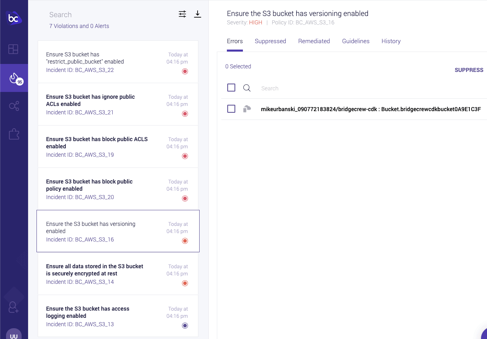
By default, Bridgecrew will always run all checks on the CloudFormation resources to ensure that all violations are visible. The -c argument in the bridgecrew command allows us to fail builds conditionally for specific checks.
We now have a console view of all IaC errors in build-time. If we had other builds and repos running as well, we’d see them all listed here.
Fix the violation and deploy the stack
Now, we can test fixing the violation, getting a clean scan, and deploying the stack.
Update the bucket to be compliant with our check:
bucket = s3.Bucket(self,
'bridgecrew-cdk-bucket',
bucket_name='bridgecrew-cdk-bucket',
versioned=True,
removal_policy=RemovalPolicy.DESTROY)
Add, commit, and push the git changes for the bucket using versioning.
git add . git commit -m "add bucket versioning" git push origin master
Viewing the CodeBuild logs, we now see the check passes: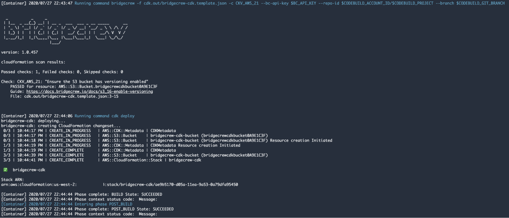
The CloudFormation stack deployment is also complete: 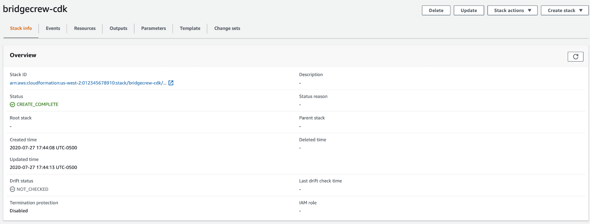
And we can verify that the resulting S3 bucket now uses versioning: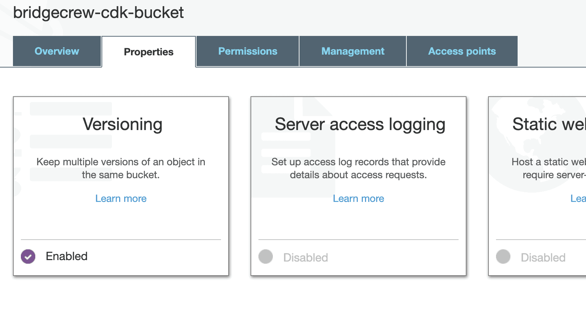
Remember that we only used one check to block the build to keep the tutorial simple. This bucket does not actually adhere to all the best practices, as you can see in the console below, so be careful when deploying it.
Going back to the Bridgecrew console, we see that the BC_AWS_S3_16 violation is removed and there are now six violations instead of seven:
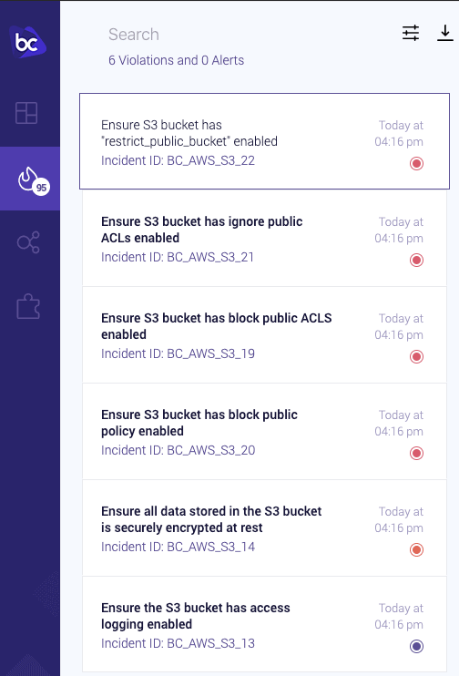
Congratulations! You just deployed a compliant AWS resource after using Bridgecrew’s IaC scanning to report violations in CloudFormation templates generated using AWS CDK! 🚀
With Bridgecrew in place, you’re able to monitor all violations for ongoing builds within a repository without having to check the results of any individual build. These strategic add-ons to your cloud ecosystem ensure a few key aspects of AWS CDK implementation and security.
For starters, you can automate the process of identifying key issues or misconfigurations. Similarly, if you add this setup across several IaC repositories, you’ll get a single view of all violations across your organization. Even the best IT department could use a hand keeping an eye on these errors.
Plus, the more you allow infrastructure as code to run security for you, the smoother the process is during updates and eventual scaling of your cloud computing needs. To take Bridgecrew to the next level, you can also add AWS resource scanning in run-time to get consolidated insights into deployed resources created outside of your CI/CD process.
When you’re considering all that IaC can offer your cloud infrastructure, don’t be afraid to reach out about all potential uses for this invaluable tool. Get started with Bridgecrew’s better approach to cloud computing today.
To learn more about getting started, check out these resources: